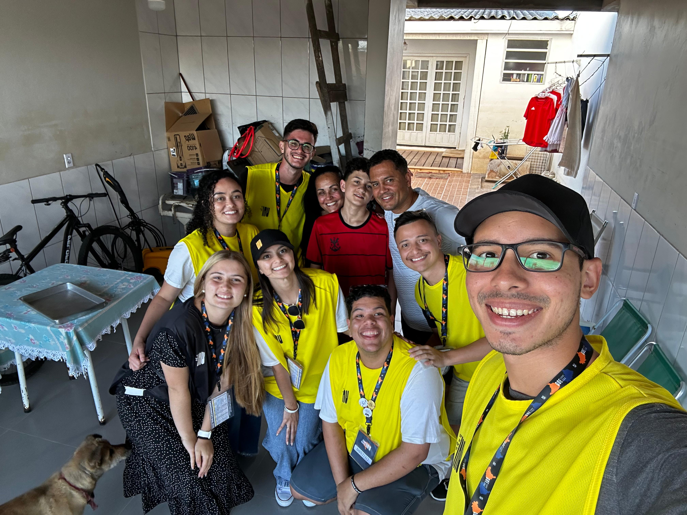
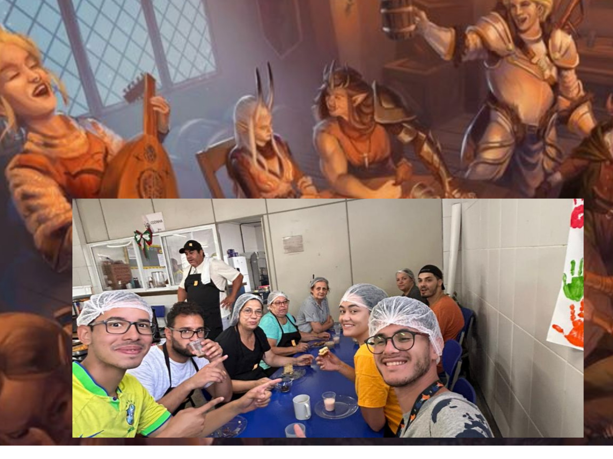
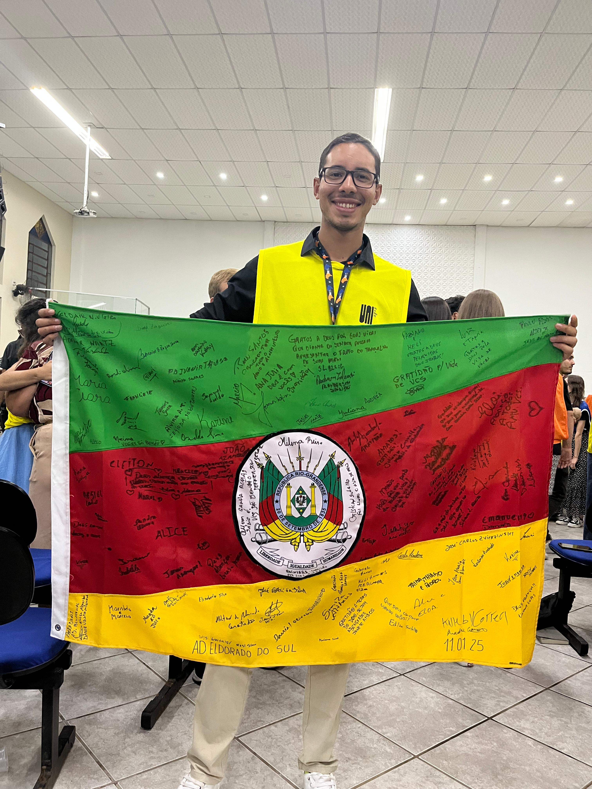

Doe Suas Férias 2025
Olá! Eu me chamo Asafe!
Neste artigo irei contar um pouco sobre a minha experiência de evangelismo na cidade de Eldorado do Sul, uma das cidades mais atingidas pela enchente de 2024.
Espero que este artigo seja edificante para você
O que é o projeto DOE Suas Férias?
O DOE Suas Férias é uma semana de serviço intenso, com o propósito de anunciar as Boas
Novas da salvação. Nossa rotina segue um ritmo bem definido: começamos o dia com um café
da manhã seguido de um devocional em grupo. Em seguida, saímos para o evangelismo de porta
em porta, momento em que também convidamos as pessoas para os eventos da tarde na escola
onde estamos hospedados e para o show que acontece à noite.

Durante a tarde, realizamos atividades voltadas para diferentes públicos: crianças,
adolescentes, homens, mulheres e idosos. Todas as atividades têm como objetivo principal
compartilhar o Evangelho. Por exemplo, os homens podem receber cortes de cabelo gratuitos
e, enquanto aguardam ou são atendidos, participam de conversas edificantes sobre o amor de Deus.
À noite, promovemos um show especial, com música, teatro e uma mensagem breve e impactante
sobre salvação. Além disso, contamos com o projeto Morada Feliz, no qual reformamos uma casa,
levando não apenas transformação material, mas também esperança e amor ao lar de uma família.
Como você está?
Perguntar como alguém está é tão comum que, muitas vezes, não percebemos o poder que essa
simples pergunta tem de nos conectar com as pessoas. E essa conexão pode abrir portas para
compartilharmos o Evangelho, permitindo que o Espírito Santo toque os corações.
No terceiro dia do Doe Suas Férias 2025, saímos pela manhã para evangelizar de porta em porta,
como tradicionalmente fazemos. Em uma dessas visitas, conhecemos um homem generoso e simpático
chamado Heber, diretor de uma das escolas que abrigaram as vítimas da enchente de 2024.
Ele nos recebeu com hospitalidade e nos convidou para entrar. Passamos mais de uma hora
conversando com ele e sua esposa, ouvindo suas histórias e vivendo um momento de empatia.
Falamos sobre muitas coisas, mas principalmente sobre a enchente e seus impactos. Queríamos saber,
de verdade, como eles estavam — física, emocional e espiritualmente.

Em um dado momento, com os olhos marejados de emoção, Heber disse: "O governo me procurava para
cobrar sobre a escola, eu mesmo me cobrava pelo trabalho e pela família... mas ninguém me
perguntou como eu estava".
Naquela tarde, voltamos à sua casa para continuar a conversa, tomar um chimarrão e comer cuca.
No fim, tivemos um momento de oração e louvor, e ali, ele e sua esposa confessaram Jesus como
único e suficiente Salvador.
Essa experiência me ensinou que evangelizar não se trata apenas de falar, mas também de ouvir
com empatia. Por isso, convido você a ser mais intencional ao amar o próximo. Não pergunte como
alguém está apenas por educação ou formalidade. Lembre-se de que se trata de uma alma, alguém por
quem Jesus se sacrificou. Às vezes, essa pessoa precisa apenas de um ombro para chorar, um abraço
ou um espaço para desabafar.
Não somos movidos por sentimentos
As semanas que antecederam o DOE Suas Férias foram repletas de desafios que me deixaram desanimado.
Durante a semana de serviço, o que predominava em mim era o cansaço espiritual e físico. Ao chegar em Eldorado do Sul,
descobri que não estava sozinho; muitos voluntários também estavam enfrentando o mesmo sentimento.
Em uma dessas conversas, uma amiga disse algo que me marcou:
“Essa semana está exigindo que a gente se mova pelo que lemos na Bíblia, e não pelo que estamos sentindo.”
Essas palavras ecoaram dentro de mim. O que nos sustentava era uma verdade simples, mas poderosa:
estamos desanimados, mas Jesus ressuscitou; queremos desistir, mas Ele continua sendo o Senhor de toda a criação.
Diante dessas e de tantas outras verdades, não podemos nos render às circunstâncias. O Evangelho é maior que
qualquer cansaço e precisa ser anunciado. Deus deve ser adorado independentemente do que sentimos.
O perigo de ser guiado apenas pelo sentimento é que ele oscila. *John Bunyan*, em *O Peregrino*, nos alerta
sobre isso ao apresentar o personagem O Temporário: alguém que inicia sua caminhada na fé
cheio de entusiasmo, mas desiste diante das dificuldades, pois sua convicção não estava firmada na verdade.
No livro, lemos que “somente uma sólida convicção doutrinária poderia mantê-lo”. Isso nos lembra que
a fé verdadeira não depende de momentos de emoção, mas da certeza inabalável da Palavra de Deus.
A princípio, a emoção não é algo ruim, mas não podemos depender dela para amar a Deus, que é o mesmo que obedecê-Lo.
Quantas vezes você já se emocionou durante um culto, sentindo a presença de Deus, levantando as mãos e
louvando com fervor? Mas adivinha: quando o culto acaba, Deus continua com você. Ele está na sua casa,
no seu trabalho, no seu cotidiano. Mesmo quando você não sente arrepios ou emoção, Ele continua presente
e deseja sua adoração, tanto nos momentos de alegria quanto nos de estresse.
Devemos amá-Lo com todo o nosso coração, com toda a nossa alma e com todo o nosso entendimento
(Mateus 22:37). Amar a Deus não é apenas sentir algo por Ele, mas obedecê-Lo. Como está escrito:
“Aquele que tem os meus mandamentos e os guarda, esse é o que me ama” (João 14:21).
Obedecer é uma ação, não um sentimento.
Dependência total
"Eu sou a videira, vós sois os ramos. Quem permanece em mim, e eu nele, esse dá muito fruto;
porque sem mim nada podeis fazer." (João 15:5)
Em João 15:5, Jesus nos ensina a sermos totalmente dependentes d'Ele. Sem Ele, nada
podemos fazer.
Durante a semana do Doe, estávamos como Moisés, que disse: "Se a tua presença não for conosco, não nos faças subir daqui." (Êxodo 33:15).
Um momento que demonstrou essa postura de dependência aconteceu durante um devocional. Ao final, nosso pastor, Oeliton Garcia da Silva, se ajoelhou e pediu que todos orassem por ele, pois no dia seguinte se reuniria com governantes da cidade para tratar de alguns projetos.
Diante disso, ele não confiou em sua oratória ou sabedoria, mas lembrou-se de que, sem Jesus, nada poderia fazer. Que isso nos sirva de exemplo.
Jornada dos peregrinos
Outra coisa que o Doe proporcionou, e que não posso deixar de citar, é a mesa: momentos em que os filhos de Deus se reúnem e compartilham sobre sua jornada.

Quem já se aventurou em algum jogo de RPG sempre tem histórias para contar sobre como seu personagem enfrentou masmorras, dragões, orcs, entre outros desafios.
Em muitas dessas histórias, diferentes personagens se encontram e relatam alegremente seus triunfos. O cristão vive algo semelhante, mas de uma forma ainda mais empolgante, e é real.
Nos momentos de mesa do Doe, sempre haviam boas histórias para ouvir. Pessoas de diversos lugares compartilhavam suas experiências: na Europa, com tribos indígenas, em expulsões de demônios, curas de enfermos, multidões que aceitaram Jesus ou até mesmo sobre como tem sido a maternidade. Diante disso, chegamos à seguinte conclusão: ser cristão é ser um aventureiro.
Portanto, quando estiver reunido com seus irmãos, pergunte sobre a jornada deles, o que Deus tem falado com eles. Tenho certeza de que você se alegrará ao descobrir que Deus tem filhos em muitos lugares e que Ele usa tanto você quanto eles para realizar a Sua obra. Além disso, você se sentirá encorajado a fazer a vontade de Deus por esses testemunhos.
Não vamos parar!
"E, chegando-se Jesus, falou-lhes, dizendo: É me dado todo o poder no céu e na terra. Portanto, ide, fazei discípulos de todas as nações, batizando-os em nome do Pai, e do Filho, e do Espírito Santo; ensinando-os a guardar todas as coisas que eu vos tenho mandado; e eis que eu estou convosco todos os dias, até à consumação dos séculos. Amém!" (Mateus 28:18-20)
O Rei mandou, portanto, devemos obedecer. Convido vocês a serem mais intencionais em cumprir a Grande Comissão. Encontrem maneiras de alcançar aqueles que estão famintos pelo Pão da Vida e dediquem-se a apressar a vinda do Senhor Jesus.
Uma das formas que Deus me proporcionou para continuar cumprindo a Grande Comissão é o CTMVida — Centro de Treinamento Missionário Vida. Este ano, estarei indo para essa casa de missionários para me capacitar para a obra de Deus, através de estudos teológicos, missiológicos e serviço prático. Esse seminário desenvolve diversos projetos de evangelismo durante o período de formação, e estou muito feliz por essa oportunidade.
Você pode fazer parte desse projeto orando pelo meu ministério e contribuindo financeiramente para minha caminhada. Caso queira ajudar ou conversar comigo, me chame no WhatsApp: (47) 99612-8249.
